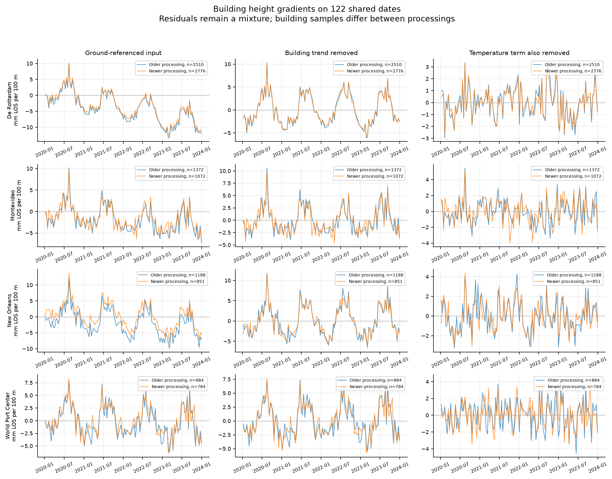
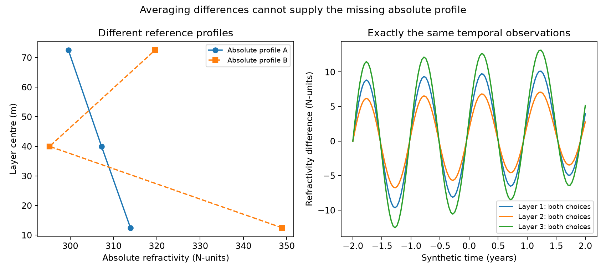

Removing what the buildings do
Before the air can be read, the movement of the buildings has to come out. A pilot on four towers shows that the reference problem is handled, and that the building correction can remove the air signal too.
Pilot of 30 September 2026. Diagnostic experiments, not a validated atmospheric retrieval.
In short
- The reference is not the problem. Whichever of five references is used, the corrected height contrast stays the same.
- Temperature is. Buildings expand with temperature, and the air near the ground also changes with temperature. A correction that removes everything linked to temperature removes part of the air signal with it.
- Changes are not levels. The method sees changes from one pass to the next. Turning those into an actual profile needs one profile from somewhere else.
The reference changes the zero, not the height contrast
We compared the two processings on the same 122 dates, January 2020 to December 2023, with five references: the 499 shared ground pairs, the original processor reference, each processing's own ground points, and the western and eastern halves of the shared ground.
The full contrast-based correction changes the final height gradient by at most 1.09 × 10-14 mm per 100 m across the five choices: numerical round-off. It keeps a free spatial intercept and the same points and weights. A deliberately naive temperature fit without that protection changes its coefficient by up to 0.001934 mm/m/K. This does not identify the original reference point or make the ground stable; it shows that a spatially uniform reference signal cancels from the tested contrast.
Four buildings, step by step
For each tower we remove each point's offset and a building-wide trend that may grow with height, then fit one temperature response to the height contrast. What is left gets smaller at each step. Smaller is not the same as more correct: the last step can remove air signal as well as building movement.

| Processing | Building | Points | Raw | Detrended | Corrected | Point SD |
|---|---|---|---|---|---|---|
| 2014-2023 | De Rotterdam | 2510 | 6.12 | 3.27 | 1.33 | 1.76 |
| 2014-2023 | Montevideo | 1372 | 3.43 | 2.66 | 1.51 | 1.99 |
| 2014-2023 | New Orleans | 1188 | 4.43 | 3.69 | 1.58 | 1.79 |
| 2014-2023 | World Port Center | 884 | 2.99 | 2.93 | 1.70 | 1.99 |
| 2020-2026 | De Rotterdam | 2776 | 5.70 | 3.16 | 1.21 | 1.62 |
| 2020-2026 | Montevideo | 1072 | 3.13 | 2.58 | 1.56 | 1.82 |
| 2020-2026 | New Orleans | 851 | 3.84 | 3.42 | 1.50 | 1.57 |
| 2020-2026 | World Port Center | 784 | 2.90 | 2.83 | 1.59 | 1.70 |
Raw, detrended and corrected: RMS of the height gradient in mm line of sight per 100 m, all on the same 2020 to 2023 dates. Point SD: the spread of the points around the building model in mm, averaged over dates; it is not an error bar for the atmosphere. The aggregate data also give each building's height spread and rate spread (SD, 10th and 90th percentiles).
Baseline: coherence above 0.6, points more than 5 m above ground, coherence-squared weights, linear trend, five-day temperature response time, KNMI Rotterdam daily temperature as a proxy for structural temperature. The fitted coefficient is an effective line-of-sight response in mm/m/K, not a material constant. Atmosphere with the same temperature dependence and height structure is inseparable in this model. The building samples differ between processings: only 11, 32, 13 and 15 mutual pairs remain above 5 m in both for De Rotterdam, Montevideo, New Orleans and World Port Center, so this is not a matched-target cross-validation.
Tested on dates the fit never saw
Fitted on 63 dates in 2020 and 2021, tested on the 59 dates of 2022 and 2023. The more flexible the correction, the worse it can do on new dates.
Baseline residual-gradient RMS on withheld dates: 1.71 to 2.21 mm/100 m. The 15-day linear case gives 1.25 to 1.89; the 5-day quadratic case 1.83 to 5.76. That shows sensitivity and possible extrapolation error; it does not make the 15-day case physically right, since a model can lower residuals by removing the air. The equal-weight mean of the four corrected gradients has RMS 1.19 and 1.09 mm/100 m (older, newer); leaving one building out changes it by 0.24 to 0.39 mm/100 m RMS, a sensitivity range rather than a confidence interval. Ten-metre height bins keep 5 to 9 bins per building and processing, each with at least 20 points.
Does a known air signal survive?
A synthetic test answers that: add a known air pattern to simulated building movement and noise, run the same correction, and see how much of the pattern comes back. When the air does not follow temperature, all of it survives. The more closely it follows temperature, the more the correction takes away.

| Correlation with temperature | All dates | Held-out median | Held-out 5th to 95th percentile |
|---|---|---|---|
| 0.0 | 100 % | 108.0 % | 101.0 to 137.9 % |
| 0.5 | 75 % | 86.2 % | 76.0 to 108.0 % |
| 0.9 | 19 % | 22.2 % | 5.1 to 36.7 % |
| 1.0 | 0 % | 0 % | about 0 % |
These settings are experimental choices, not estimates from Rotterdam: the real correlation between the air and temperature here is not known. Detrending also removes a linear air trend, and a deliberately unmodelled nonlinear expansion produced an apparent residual of 10.03 N-units RMS with no air variation at all.
Changes do not give an absolute profile
The method sees how the air changes from one pass to another, never how much air there is. Two very different profiles that change in the same way look identical. One profile from somewhere else (a sounding, a tower or a reconstruction) has to fix the level, and that choice is an assumption, not something the radar measures.

For a temporal difference, ΔN(t) = N(t) - N(ref), so its mean is mean(N) - N(ref). Example with the simplified Smith-Weintraub model at P = 1013 hPa, T = 288 K, e = 12 hPa (N = 326.91): holding N fixed, assuming T one kelvin higher moves the inferred vapour pressure to 12.295 hPa; a 10 N-unit anchor error moves it to 14.224 hPa. This shows how much the assumptions matter; the pilot reports no humidity profile.
What would settle it
- A building-expansion model constrained independently of the air, or a joint fit with an external air covariate, tested against the same failure cases.
- Confirmation of the export sign, processing filters, height datum and the hour of the pass.
- Comparison of real residuals with external observations, on separate calibration and evaluation dates, with uncertainty for the distance in space and time.
Reproduce and inspect
Code: 04_python/tsx/estimation_pilot.py; walkthrough: 03_notebooks/04_estimation_reference_pilot/; note: 01_reference/notes/2026-09-30-reference-aware-estimation-pilot.md, all in the team repository. Aggregate results. The synthetic experiments run without radar access; the real-data run needs the course data sets. Published real results include group sizes and spread; raw observations, point identifiers, coordinates and individual series are excluded.